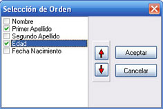
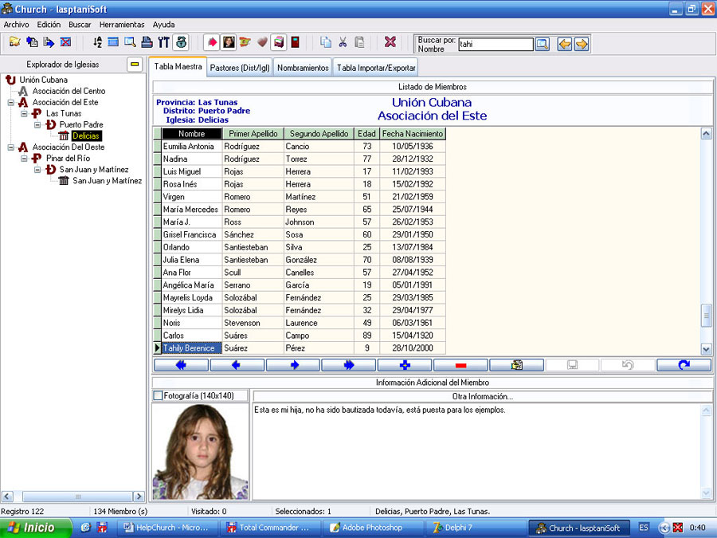
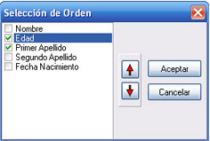
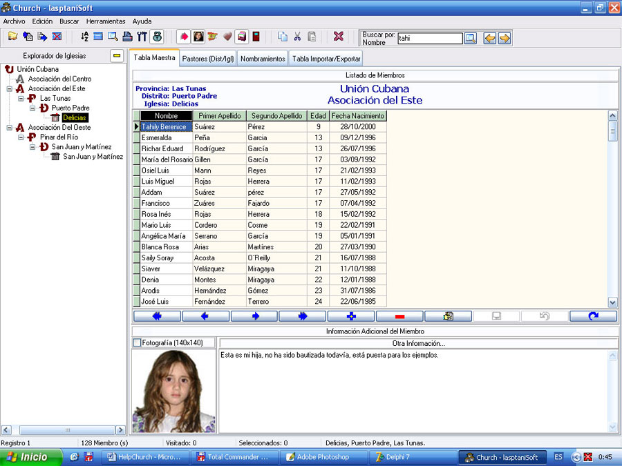

Ordenar
Los campos o registros de la Tabla Maestra se pueden Ordenar en forma ascendente y por uno o varios registros, esto está en dependencia al orden en que aparecen en la ventana de Selección de Orden.

Figura 25. Ventana Ordenar (Primer Apellido y Edad).
Veamos que en la figura 26 Tahily Berenice aparece en el registro 122, porque primero se tomó en cuenta el Primer Apellido.

Figura 26. Resultado de ordenar según figura 25.
Ahora cambiemos el orden en la ventana Selección de Orden según muestra la figura 27.

Figura 27. Selección de Orden cambiando posición.
Ahora Tahily Berenice aparece como el registro 1, porque primero se tomó en cuenta la Edad.

Figura 28. Resultado de ordenar según figura 27.